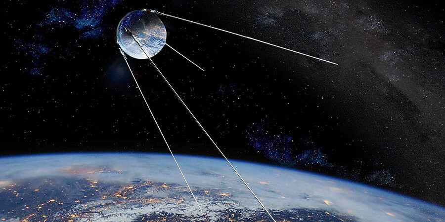

1 / 3

Konstantin publishes papers theorizing about powering rockets with liquid fuel instead of solid fuels. Robert H. Goddard also publishes a paper 12 years after (1915) regarding his experiments about liquid oxygen and gasoline as fuel for powering a small rocket successfully.
2 / 3
Dr. Hermann Oberth makes papers regarding rocket travel during 1923. This served as the inspiration for the German missile V2 (A liquid fuel powered missile) that was supposed to be used against England. However, the rocket was made too late to be used by Germany.
3 / 3

October 4, 1957
Sputnik 1. The genesis. The beginning of a new era of space exploration. The name Sputnik was derived from “wayfarer” and was the first artificial satellite to enter the Low Earth Orbit. Its purpose was simple: to test the limits and capabilities of manmade objects in space. It sent signals to the Russian space stations for 3 weeks until its zinc batteries ran out and it lifelessly orbited the planet for 2 months, before falling back down.
Sputnik 1. The genesis. The beginning of a new era of space exploration. The name Sputnik was derived from “wayfarer” and was the first artificial satellite to enter the Low Earth Orbit. Its purpose was simple: to test the limits and capabilities of manmade objects in space. It sent signals to the Russian space stations for 3 weeks until its zinc batteries ran out and it lifelessly orbited the planet for 2 months, before falling back down.
3 / 3
October 4, 1957
Sputnik 1. The genesis. The beginning of a new era of space exploration. The name Sputnik was derived from “wayfarer” and was the first artificial satellite to enter the Low Earth Orbit. Its purpose was simple: to test the limits and capabilities of manmade objects in space. It sent signals to the Russian space stations for 3 weeks until its zinc batteries ran out and it lifelessly orbited the planet for 2 months, before falling back down.
Sputnik 1. The genesis. The beginning of a new era of space exploration. The name Sputnik was derived from “wayfarer” and was the first artificial satellite to enter the Low Earth Orbit. Its purpose was simple: to test the limits and capabilities of manmade objects in space. It sent signals to the Russian space stations for 3 weeks until its zinc batteries ran out and it lifelessly orbited the planet for 2 months, before falling back down.